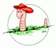

U.S. Department of the Interior, U.S. Geological Survey, Reston, VA, USA
Contact: Questions? Issues? Subscribe to the Earthworm List (earthw).
Privacy Statement || Disclaimer || FOIA || Accessibility

EARTHWORM MODULESApril 4, 2007
| Module name | Its function, briefly | more info (note 1) | |
|---|---|---|---|
| startstop | Starts & stops all EARTHWORM modules on a computer. This module is the core of the earthworm system. | overview | commands: Windows Solaris Linux |
| restart | Allows manual restarting of individual modules. | overview | commands |
| reconfigure | Allows adding new modules or rings to a running EARTHWORM (new in EW v7.0) | overview | commands |
| pau | Completely shuts down EARTHWORM and all modules/ rings | overview | commands |
| stopmodule | Given an EARTHWORM module process ID, stopmodule stops it, and startstop marks it as "Stop" to prevent statmgr from restarting it.(new in EW v7.1) | overview | commands |
| pidpau | Given an EARTHWORM module process ID, pidpau stops it. | overview | commands |
| StarstopConsole | Creates a command prompt window with access to startstop_service (Windows only) | overview | none |
| Module name | Its function, briefly | more info (note 1) | |
|---|---|---|---|
| statmgr | Monitors EARTHWORM system integrity via heartbeat and error messages. Sends email and pager messages as required | overview | commands |
| copystatus | Copies heartbeats and error messages from one shared memory region to another | overview | commands |
| diskmgr | Monitors the amount of free disk space available | overview | commands |
| status | Outputs to the screen EARTHWORM status of rings and modules. | overview | commands |
| Module name | Its function, briefly | more info (note 1) | |
|---|---|---|---|
| adsend | Digitizes analog seismic signals on Win2000 system only | overview | commands |
| gcf2ew | Guralp Digitizers Earthworm feed via direct connection to
serial port or TCP terminal server (Solaris only) (new in EW v7.0) |
overview | commands |
| k2ew | Receives data packets from a Kinemetrics K2 Strong Motion Accelerograph via serial port or TCP on either Solaris or Win2000 | overview | commands |
| naqs2ew | Naqs2ew is an interface through which waveform data collected by the Nanometrics data acquisition software, NaqsServer, can be fed into an Earthworm system in near-real-time. | overview | commands |
| psnadsend |
PSNadsend for Public Seismic
Network (webtronics digitizer) (new
in EW v7.1) |
overview |
commands |
| q2ew | A Quanterra/COMSERV data feeding program | overview | commands |
| q3302ew |
A Quanterra Q330 data feeding
program |
overview |
commands |
| reftek2ew | A Reftek data feeding program | overview | commands |
| scream2ew | Scream2ew converts data from Guralp SCREAM server to trace_buf earthworm messages and puts them into an earthworm ring. | overview | commands |
| srparxchewsend |
Symmetric Research Digitzer
module for SRPARXCH 24-bit digitizers |
overview |
commands |
| windsr2ew |
Receives data packets from a windsr digitizer (webtronics) using TCP/IP (new in EW v7.1) | overview |
commands |
| Module name | Its function, briefly | more info (note 1) | |
|---|---|---|---|
| pick_ew | Picks P-arrivals and makes coda measurements | overview
tuning info |
commands |
| pkfilter |
A duplicate pick removal filter. (new in EW v7.0) | overview |
commands |
| binder_ew | Associates P-arrivals into events | overview/setup | commands |
| eqproc | Initiates final event processing (head of mega-module). | overview | commands |
| eqprelim | Initiates preliminary event processing (alternate head of mega-module). | overview | commands |
| eqbuf | Buffers events (part of mega-module) | overview | commands |
| eqcoda | Performs coda calculations (part of mega-module) | overview | commands |
| eqverify | Passes only events verified as earthquakes (part of mega-module) | overview | commands |
| gegqproc | Clone of eqproc designed to work with glass. (new in EW v7.0) | overview | commands |
| glass | Carl Johnson's Global Associator. See the overview for the Glass Manual written for Hydra by Dave Kragness. (new in EW v7.0) | overview | commands |
| hyp2000_mgr | Relocates earthquakes using Hypoinverse (tail of mega-module) | overview | commands |
| hyp2000 | Hyp2000 is the stand-alone version of hypoinverse, an earthquake location program, written and maintained by Fred Klein at USGS, Menlo Park | overview | commands |
| evanstrig and evansassoc | Evanstrig monitors waveforms for long-period signals; evansassoc associates LP triggers into events. | overview | Evanstrig
Commands Evansassoc Commands |
| carl*trig |
The Carl Johnson coincidence trigger for Earthworm consists of two programs. CarlStaTrig produces station trigger messages on a transport ring. CarlSubTrig reads these and writes a TRIGLIST message. | overview | CarlStaTrig CarlSubTrig |
| rayloc_ew | Ray Buland's global earthquake locator. (new in EW v7.0) | overview | commands |
| raypicker | Ray Buland's global picker. (new in EW v7.0) | overview | commands |
| statrigfilter |
A pkfilter like module for filtering out duplicate station triggers. (new in EW v7.0) | overview |
commands |
| compress_UA and decompress_UA | The compress_UA and decompress_UA modules implement the gencompress algorithm which is used with permission from Boulder Real Time Technologies, Inc., copyright 1997. | overview | Compress_UA Decompress_UA |
| decimate | Implements filter and decimate routines. | overview | commands |
| fir | Implements a general-purpose FIR filter for trace data. | overview | commands |
| arc2trigII | Takes a hypo arc message as input, uses user specified criteria for selecting snippets (different from arc2trig), and produces a .trg file. | overview | commands |
| eqfilter | Performs parameter tests on Hypoinverse ARC messages. | overview | commands |
| eqfilterII | Clone of eqfilterII to work with any of TYPE_HYP2000ARC, TYPE_LOC_GLOBAL, and TYPE_RAYLOC (new in EW v7.0) | overview | commands |
| localmag | Calculates the Local Magnitude | overview | commands |
| gmew | Calculates strong motion parameters | overview | commands |
| wftimefilter |
Sanitizer of waveform packets to eliminate out of order and badly timed packets (overlaps and dups etc). (new in EW v7.0) | overview |
commands |
| Module name | Its function, briefly | more info (note 1) | |
|---|---|---|---|
| coaxtoring | Reads EARTHWORM messages from Ethernet and places them into shared memory | overview | commands |
| condenselogo | Reads messages from a list of logos from one transport ring and writes them to another ring using its own installation and module id in the logo. | overview | commands |
| ringtocoax | Reads EARTHWORM messages from shared memory and broadcasts them onto Ethernet | overview | commands |
| ringtocoaxII | Same as ringtocoax but with an
input queue (new in EW v7.0) |
overview |
commands |
| menlo_report | Transfers single-event HYPOINVERSE archive files to a remote machine | overview | commands |
| export_generic export_scn export_scn_pri export_ack export_scnl_ack export_gen_actv |
Exports EARTHWORM messages over Internet (partner
to import_generic) (export_ack and export_scnl_ack are new in EW v7.0) |
overview | export_generic export_scn export_scn_pri export_ack export_scnl_ack export_gen_actv |
| ew2file |
Converts EARTHWORM
messages into files. |
overview |
commands |
| file2ew |
Inserts EARTHWORM
messages files onto rings. |
overview |
commands |
| import_generic import_pasv |
Imports EARTHWORM messages over Internet (partner to export_generic) | overview | import_generic
commands import_pasv commands |
| vdl_ew | This is the Earthworm encapsulation of the USNSN code written by Dave Ketchum, USNSN. | overview | commands |
| import_ida | This program enables an Earthworm to retrieve and process continuous trace data from numerous IDA data servers. | overview | commands |
| rcv_ew | The module permits turn-key, two-way trace data exchange between the USNSN and regional networks. | overview | commands |
| liss2ew | Liss2ew is the earthworm module for receiving trace data from the Live Internet Seismic Server. | overview | commands |
| liss2ew_scnl | Liss2ew_scnl is the earthworm module for receiving trace data from the Live Internet Seismic Server. This is a rewrite of liss2ew for SCNL and has only been tested under windows (new in EWv7.0) | overview | commands |
| ew2liss | Ew2liss is the Earthworm module for serving Earthworm trace data in LISS (Live Internet Seismic Server) format. | overview | commands |
| ringdup | Ringdup is a program to read messages (with user specified logos) from one ring and deposit them in another. This is actually two program, ringdup_generic and ringdup_scn. | none | Ringdup_generic
commands Ringdup_scn commands |
|
scn2scnl
scnl2scn
|
SCN 2 SCNL converters for waveform packets (new in EW v7.0) | overview |
scn2scnl scnl2scn |
| pickwasher |
Pick format (scnl to global)
converter
from NEIC(Windows and Solaris compat) (new in EW v7.1) |
overview
|
commands |
| slink2ew |
Seedlink importer module from
Chad Trabant (Windows and Solaris compat) (new in EW v7.0) |
overview |
commands |
| sendfileII getfileII makehbfile |
Set of programs used to transfer files between computers running Windows 2000 and/or Sun Solaris. These programs do not require an Earthworm setup. | overview | ---- |
| Module name | Its function, briefly | more info (note 1) | |
|---|---|---|---|
| wave_serverV | Wave_serverV provides a network-based service for trace data. It acquires Earthworm trace data messages for specified channels and maintains a disk-based circular buffer for each channel. | overview | commands |
| tankplayer | Simulates an adsend module: reads a waveform file and puts waveform messages in shared memory in pseudo-real-time | overview | commands |
| trig2disk |
Trig2disk module reads trigger messages and retrieves waveform data from wave_serverV into AH or SAC format files. | overview | commands |
| waveman2disk |
Manual, interactive program to save trace data from Earthworm Wave_servers to disk. | overview | commands |
| Module name | Its function, briefly | more info (note 1) | |
|---|---|---|---|
| wave_viewer | Wave_viewer, which runs under Win2000, acts as an electronic develecorder. It retrieves waveform data from wave_serverV and displays it. | overview | commands |
| heli_ewII | heli_ewII is designed to autmatically provide GIF images of waveforms for display on the WWW. It can run as an Earthworm module or a standalone program | Heli_ew Overview | Heli_ew Commands |
| sgram | Creates spectrogram displays for the WWW | overview | commands |
| latency_mon | Logs and displays latency and outages of data from a specified ring (Windows only) | overview | commands |
| Module name | Its function, briefly | more info (note 1) | |
|---|---|---|---|
| cleandir |
Windows directory cleaning module as a windows service. (new in EW v7.0) | overview | commands |
| config_ws |
Create the WaveServerV tankfiles based on polling of a WAVE_RING. (new in EW v7.0) | overview | commands |
| dumpwave |
Dump a waveform data file to the screen. | overview | none |
| file2ring |
Load contents of file into a ring. | overview | none |
| ellipse2arc | ellipse2arc -- convert from HypoEllipse (Hypo71) Message into Hypoinverse format Message | none | commands |
| findwave | Program to listen to a ring, and write to a file the SCN(L)'s of all TRACEBUF or TRACEBUF2 messages found there and some statistics about the SCN(L). | overview | none |
| gaplist | Program to search for gaps in TRACEBUF or TRACEBUF2 messages and print tables. Developed by Will Kohler at USGS, Menlo Park. | none | commands |
| getmenu [UW] |
Retrieves and prints the menu from the wave server. | overview | none |
| getstation | Retrieves and prints a station list from the wave server. A
subset of getmenu. |
overview | commands |
| maketrace | Trace data load test component |
overview | none |
| pick_recorder |
Records picks SCNL or PICK2K to
a file per day in a user specified directory |
overview |
commands |
| putpick | Reads a file containing a series of pick/coda msgs and writes
them to shared memory ring |
overview | none |
| sniffring | Latches onto a user-defined transport ring, reads every nessage and prints logo to screen. | overview | none |
| sniffwave | Reads waveform messages from Earthworm transport ring and for each message, prints the logo and header information to the screen. | overview | none |
| template | A template module for programmers who want to create ther own
Earthworm module |
overview | none |
| wave_probe | Sends a trace request for one station in a waveserver,
creating a debugging file |
overview | none |
| wsv_test | Program to request menu from a list of wave_serverVs and report to the status manager if any wave server process is dead. Developed by Will Kohler at USGS, Menlo Park. | none | commands |
Note 1: The configuration files in this table should be verified by comparison with the configuration file examples in the source directory of each module.
| Originally funded and developed by: U.S. Department of the Interior, U.S. Geological Survey, Reston, VA, USA Contact: Questions? Issues? Subscribe to the Earthworm List (earthw). Privacy Statement || Disclaimer || FOIA || Accessibility |